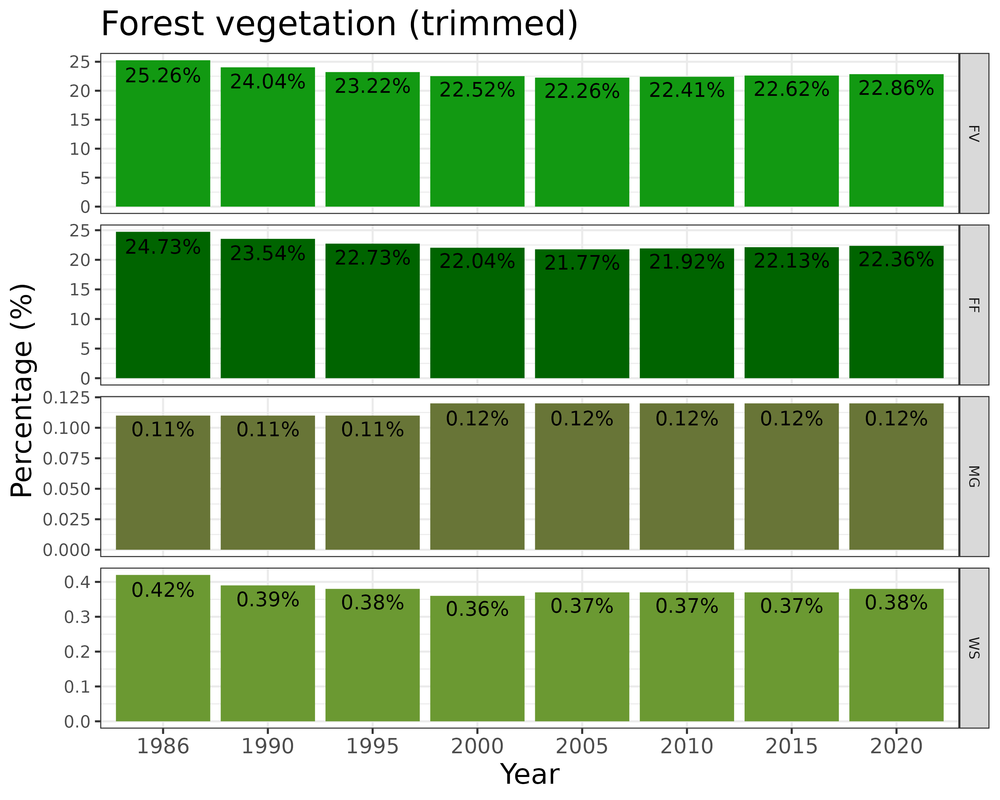
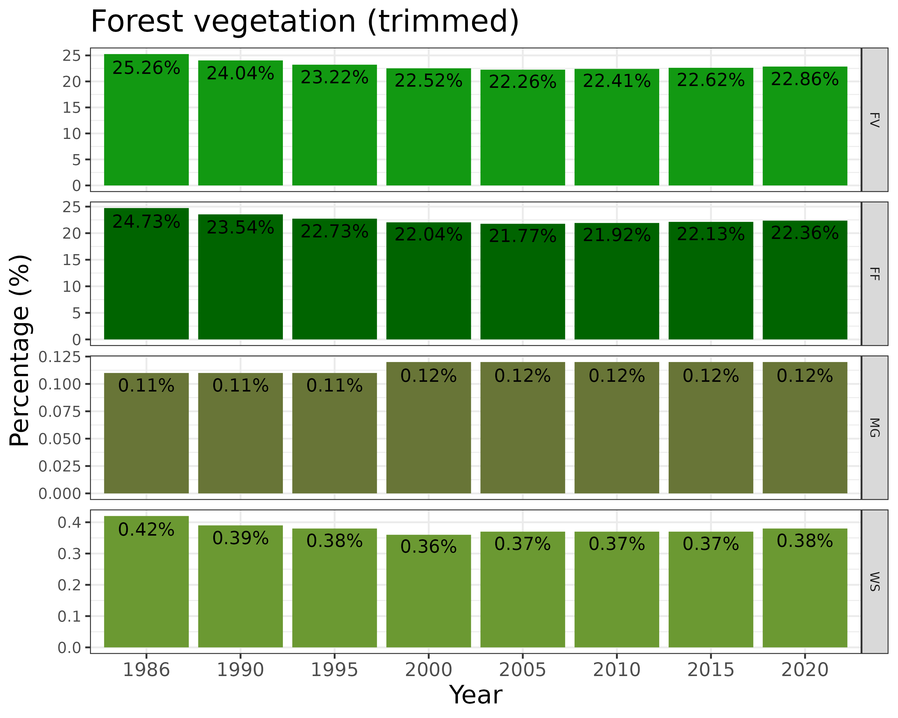

Tópicos avançados em programação em R
NT265/NE441 - Análise de dados e apresentação de gráficos usando a linguagem R
29 de outubro de 2025
Slides
Explicando os slides
Este é um link no slide

Análises Ecológicas no R (2022)

Artigo da Mata Atlântica (2024)
 
 
IMPORTANTE!!!
Estamos num espaço seguro e amigável
Sintam-se à vontade para me interromper e tirar dúvidas


Para apresentar os próximos conceitos e funções, vamos usar dados de pinguins

palmerpenguins
Dados de medidas de pinguins chamados
palmerpenguinsDados coletados e disponibilizados pela Dra. Kristen Gorman e pela Palmer Station, Antarctica LTER, membro da Long Term Ecological Research Network
Dois conjuntos de dados:
penguins_raw(dados brutos)penguins(versão simplificada)

palmerpenguins

Função composta

Para se aprofundar
cumsum: função para soma cumulativacut: função para dividir uma sequencia de valores em intervalosjanitor: pacote com funções para limpar bases de dados e fazer tabelas de frequência

IMPORTANTE!

Controle de fluxo
- Muda o comportamento do código com base em condições
- Condicionais:
if,elseeelse if

if
- Se uma condição for verdadeira, faça …
[1] TRUE[1] "x é maior que 5"
if
- Se duas condições forem verdadeiras, faça …
[1] TRUE[1] "x e y são maiores que 5"
if
- Se algo menos uma condição for verdadeira, faça …
[1] TRUE[1] "x ou y é maior que 5"
if e else
- Se uma condição for verdadeira, faça …
- Se não (falso), faça …
[1] FALSE[1] "x é menor ou igual a 5"
else if
- Se uma condição for verdadeira, faça …
- Se não (falso) se for verdadeiro, faça …
- Se não (falso), faça …
[1] "x está entre 6 e 10"
Estruturas de repetição
- Executa um bloco de código com base em repetições
- Laços:
for,whileerepeat - Controles:
breakenext

for
- Executa um bloco de código
parauma sequência de valores (vetores ou listas) [iteração]

for
- Executa um bloco de código
parauma sequência de valores (vetores ou listas) [iteração]
[1] "R"
[1] "python"
[1] "julia"
[1] "Fortran"
repeat
- Executa um bloco de código
repetidamenteaté que uma condição de parada (break) seja atendida
[1] 1
[1] 2
[1] 3
[1] 4
[1] 5
Funções
Uma função é um bloco de código que realiza uma tarefa específica
Possui entradas (argumentos) e retorna saídas (resultados)
Utilizada para evitar repetição de código, tornando-o mais organizado e reutilizável